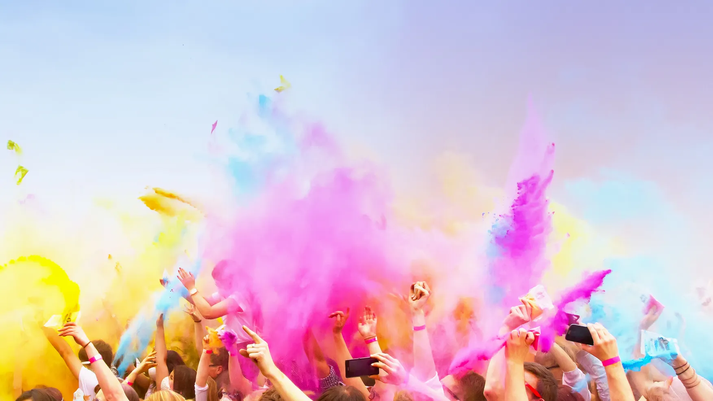

Administrador
1 dic. 2022 · 2 min
El Real Madrid consigue la victoria en la Champions 2014
Un recuento emocionante de la hazaña del Real Madrid en la final de Lisboa 2014.
0 visualizaciones · 0 comentarios
13
Administrador
1 dic. 2022 · 2 min
El Real Madrid consigue la victoria en la Champions 2016
Un recuento emocionante de la hazaña del Real Madrid en Milán 2016.
0 visualizaciones · 0 comentarios
13

Administrador
1 dic. 2022 · 1 min
El Real Madrid conquista la Liga de Campeones en el año 2018
El Real Madrid se alza como campeón de Europa en la temporada 2018 en Kiev.
0 visualizaciones · 0 comentarios
13

Administrador
16 dic. 2022 · 2 min
Real Madrid Campeon de la Champions 2022
Repaso de la emocionante final y el camino del Real Madrid hacia la gloria en Paris 2022.
0 visualizaciones · 0 comentarios
13